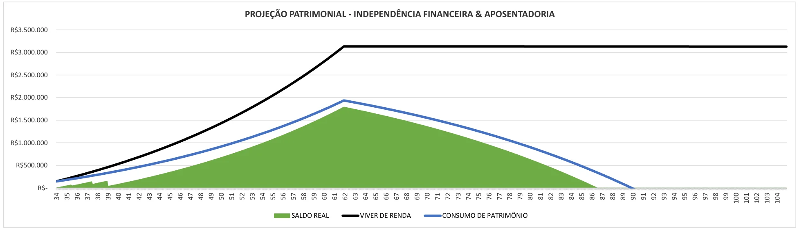
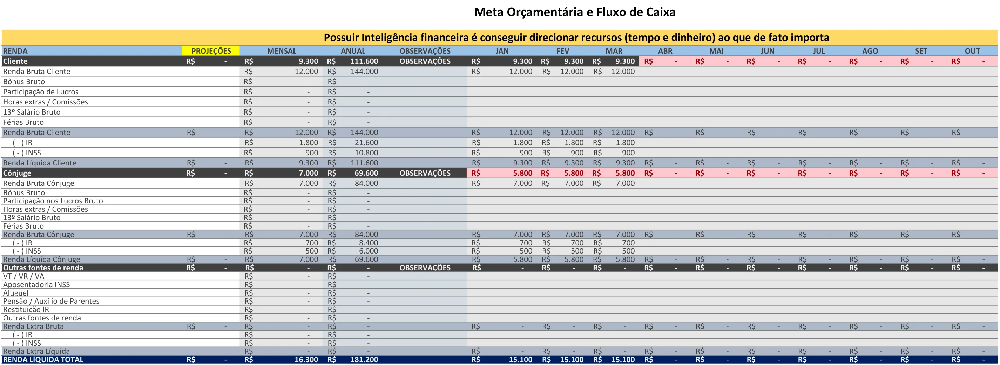
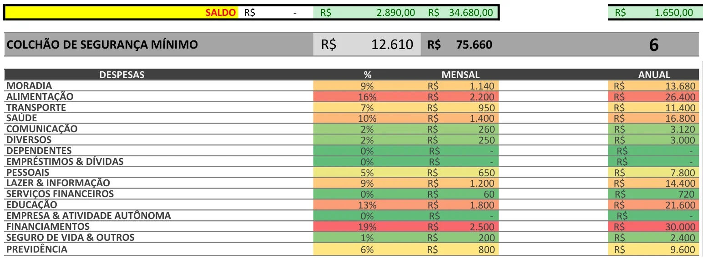
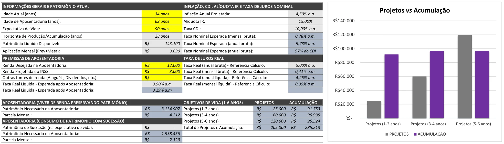
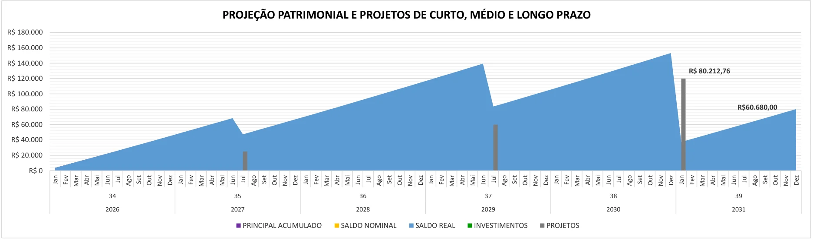
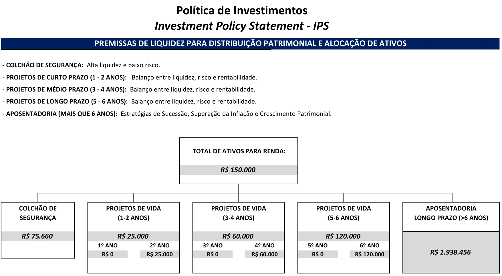

Anotar gasto não muda sua vida financeira. Saber pra onde o dinheiro vai, quanto você já tem e aonde ele te leva, sim. O Mapa junta orçamento, patrimônio, projetos de vida e projeção de aposentadoria numa planilha profissional, estruturada na metodologia internacional de planejamento financeiro pessoal. Você preenche os campos em destaque e os gráficos se montam sozinhos.
Pagamento único de R$39,90
Quero meu Mapa por R$39,90Antes de gastar um real, veja por dentro
Você informa idade, renda desejada e quanto guarda por mês. A aba de Projeções desenha a curva do seu patrimônio até a expectativa de vida e mostra o aporte mensal necessário pra viver de renda.

Imagens da planilha real, preenchida com um exemplo ilustrativo.
O que o Mapa te mostra
Cada aba responde uma pergunta que tira o sono de quem ainda não se organizou.

Meta do mês e realizado lado a lado, de janeiro a dezembro, com a renda do casal e todas as categorias de gasto.

Saldo do mês, reserva de emergência calculada pelos meses que você escolher e o peso de cada categoria em %.

Inflação, CDI, IR e taxa real já considerados. A planilha calcula o patrimônio necessário e a parcela mensal.

Coloque cada projeto no mês em que ele acontece e veja o impacto no seu patrimônio antes de gastar.

Sua política de investimentos: quanto vai pra reserva, pra cada prazo de projeto e pra aposentadoria.
arrasta pra ver mais → · toque na imagem pra ampliar
Antes de chegar até aqui
Não é falta de disciplina. Ninguém te entregou um mapa. Sem saber aonde quer chegar, qualquer gasto parece justificável.
Anotar o gasto não é o suficiente. Você precisa analisar e acompanhar os gastos enquanto eles acontecem, e ligar cada real a um objetivo: a reserva, o carro, a casa, a aposentadoria.
É assim que o planejamento financeiro profissional funciona no mundo inteiro. E é isso que o Mapa faz com você.
Como funciona
O acesso chega no seu e-mail assim que o pagamento é aprovado. Você abre a aba Orçamento e define sua meta do mês: quanto entra, quanto sai e quanto precisa sobrar.
Acesso imediatoListe investimentos, dívidas, carros e imóveis na aba Patrimônio. Depois coloque seus projetos no cronograma: viagem, troca de carro, entrada da casa. A planilha calcula o resto.
Gráficos automáticosPreencha o realizado, compare com a meta e acompanhe se a sua curva de patrimônio está no caminho da aposentadoria. O planejamento é vivo e o Mapa acompanha você.
Previsto × realizadoO que você recebe
Os nomes são os mesmos que você vai ver no arquivo. Os campos que você preenche ficam em destaque; o resto é fórmula pronta.
Um acompanhamento com planejador financeiro costuma ser cobrado todo mês. A estrutura que ele usa, você leva por R$39,90, uma vez só.
O que está incluído
A estrutura de um planejamento financeiro profissional, pra você aplicar por conta própria:
Pagamento único, no Pix ou no cartão. Acesso imediato.
Garantia de 7 dias
Comprou, abriu a planilha e por qualquer motivo não gostou? Peça o reembolso em até 7 dias e você recebe 100% do valor de volta. Sem perguntas. O risco é todo nosso.
A pergunta é quantos deles vão virar patrimônio, e quantos vão sumir sem você saber pra onde.
Quem se organiza agora começa a aproveitar os juros compostos um ano antes de quem deixa pra depois. E, no longo prazo, um ano de juros compostos pesa muito.
A pergunta não é se você deveria se organizar. É se vai começar hoje ou continuar adiando.
A metodologia por trás do Mapa
O planejamento financeiro pessoal tem um método reconhecido no mundo inteiro: entender a situação atual, definir objetivos, analisar os números, montar o plano, colocar em prática e acompanhar. É assim que planejadores certificados trabalham, dos Estados Unidos ao Japão.
O Mapa organiza esse método numa planilha só. Cada aba é uma etapa: o orçamento mostra a situação de hoje, o patrimônio faz o raio-x, as projeções transformam objetivos em números, os investimentos definem a estratégia e o plano de ação coloca tudo em prática.
A diferença é que aqui você aplica por conta própria, no seu ritmo, com o manual ao lado.
Suas dúvidas
Não. Toda a parte de cálculos e fórmulas já está pronta. Você preenche os campos em destaque e os gráficos e projeções são gerados automaticamente. O manual mostra o passo a passo de cada aba, na ordem certa. Se você sabe digitar um número numa célula, você consegue usar.
Não. A aba de orçamento é só o começo. O Mapa também faz o raio-x do seu patrimônio, planeja seus projetos no tempo, projeta a sua aposentadoria e organiza onde investir cada dinheiro. É a estrutura de um planejamento financeiro, não uma lista de despesas.
Serve. A planilha tem campos próprios pra financiamentos, empréstimos, parcelamento de cartão, cheque especial e renegociações. Ver tudo num lugar só, com o peso de cada dívida no seu orçamento, é o primeiro passo pra sair delas.
Dá. O orçamento tem a renda do titular e a do cônjuge separadas, e o patrimônio registra de quem é cada investimento. O Mapa foi feito pra organizar as finanças da casa inteira.
O Mapa é um arquivo de planilha. Pra preencher e acompanhar os gráficos, o ideal é usar no computador, onde as abas ficam confortáveis de ver.
Não. É pagamento único de R$39,90, no Pix ou no cartão. O arquivo é seu.
Assim que o pagamento é aprovado, o acesso chega no seu e-mail pela Hotmart. Você também encontra o produto em Hotmart → Minha conta → Minhas compras.
Você tem o manual passo a passo e o suporte por e-mail (mapadaorganizacaofinanceira@gmail.com) pra dúvidas técnicas. E se quiser ajuda pra montar o plano, no checkout aparece a opção da Sessão Estratégica Individual de 1 hora.
Não. O Mapa organiza os seus números e mostra quanto você precisa acumular para cada objetivo e com qual prazo. Ele não recomenda produtos financeiros específicos.
Você tem 7 dias de garantia incondicional. Se por qualquer motivo não ficar satisfeito, devolvemos 100% do valor. Sem perguntas. Sem burocracia.
Ou como o dia em que decidiu olhar pro próprio dinheiro de frente e traçou um plano. Ou como mais uma vez em que pensou “mês que vem eu começo”.
São R$39,90. É o planejamento financeiro profissional numa planilha só. É hoje.
Quero meu Mapa por R$39,90